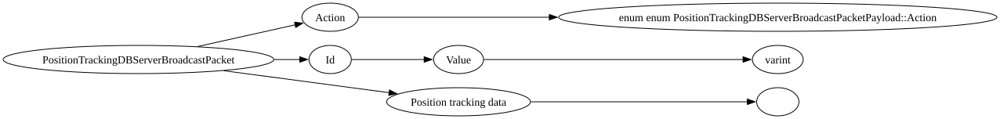

| Purpose: | Server to client packet for server authoratative runtime database (with persistent LevelStorage backup) designed primarily to track lodestone stuff. See Position Tracking DB Notes.md in bedrock-docs. |
| Notes: |

| Field Name | Field Type | Field Constraints | Field Notes |
|---|---|---|---|
| Action | enum enum PositionTrackingDBServerBroadcastPacketPayload::Action | ||
| Id | PositionTrackingId | ||
| Position tracking data | CompoundTag for record key: version (byte) id (string) positions (list of (int, int, int)) dimension (int) status (byte, record status enum) |